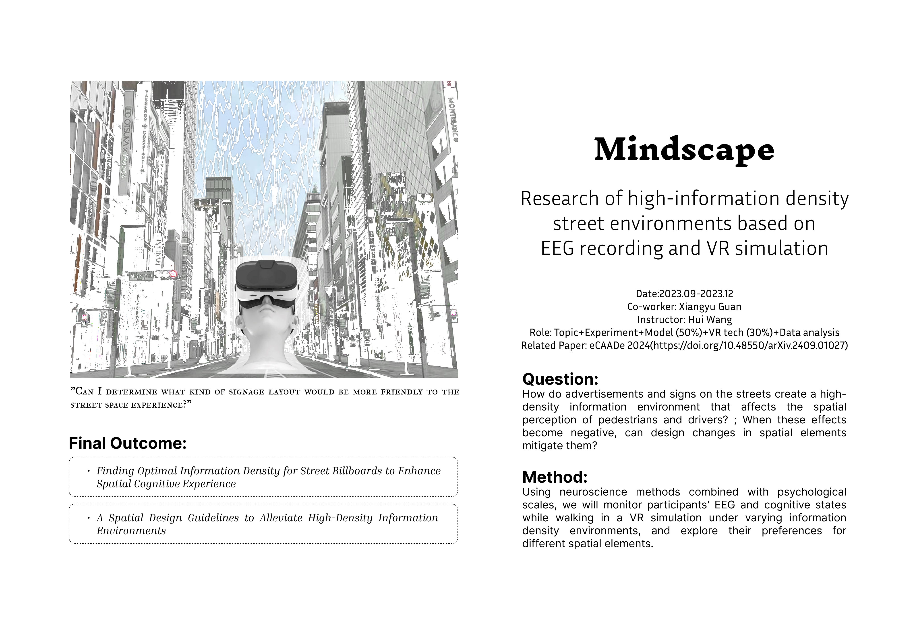

Research · 2023
Mindscape
Research of high-information density street environments based on EEG recording and VR simulation.
Background
How do advertisements and signs on the streets create a high-density information environment that affects the spatial perception of pedestrians and drivers? When these effects become negative, can design changes in spatial elements mitigate them?
Method
Using neuroscience methods combined with psychological scales, we monitored participants' EEG and cognitive states while walking in a VR simulation under varying information density environments, exploring their preferences for different spatial elements.
